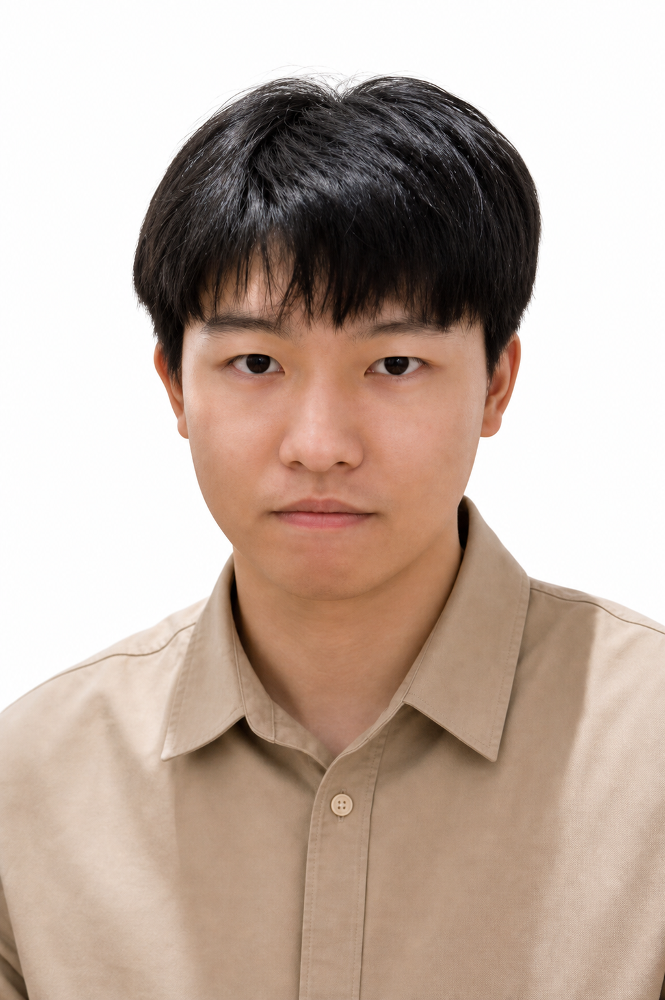
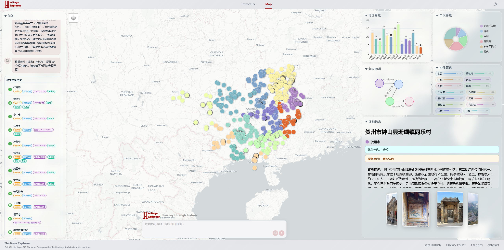
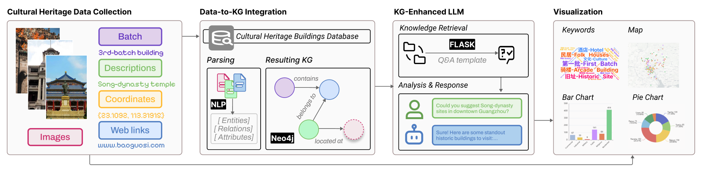

香港科技大学（广州）计算媒体与艺术 MPhil，前中科院上海微系统所嵌入式工程师。关注 GIS 可视化、知识图谱、多模态检索与文化遗产计算。 MPhil student in Computational Media & Arts at HKUST(GZ), formerly an embedded engineer at CAS SIMIT. I work across GIS visualization, knowledge graphs, multimodal retrieval, and computational heritage.

广西历史建筑多模态 GIS 平台 A multimodal GIS platform for Guangxi heritage
前端 Vue 3 + Mars2D，后端 FastAPI + Neo4j，一键 Docker Compose。14 个城市、2,036 处建筑、9,636 个构件 — 可看、可搜、可对话。 Vue 3 + Mars2D on the front, FastAPI + Neo4j on the back, single Docker Compose. 14 cities, 2,036 buildings, 9,636 components — visible, searchable, conversational.

Mars2D 打点联动 BuildingDetail，vis-network 展开建筑 / 构件 / 年代 / 城市的关系。 Mars2D markers link to BuildingDetail; vis-network unfolds building / component / era / city relations.
关键词 + BGE 文本向量 + CLIP 图像 + CLIP 构件四路并行，DeepSeek-V3 融合答复。 Keyword + BGE text + CLIP image + CLIP component lanes fused by DeepSeek-V3.
Grounding DINO 定位飞檐、斗拱、马头墙，CLIP 向量写回 Neo4j 供图像检索。 Grounding DINO localizes cornices, dougong, horse-head walls; CLIP vectors write back to Neo4j.
三层结构：Vue 3 + Mars2D 前端管地图与对话交互；FastAPI 层把问题路由到 5 个检索接口；Neo4j 存建筑 / 构件 / 文档三类节点，向量索引与关系遍历共同服务检索。 A three-tier system. Vue 3 + Mars2D handles map & dialogue on the front. FastAPI routes each query across 5 retrieval endpoints. Neo4j holds Building / Component / Document nodes, serving retrieval through both vector indexes and graph traversal.
“地图即入口，图谱即大脑，对话即指针。” “Map is the entry, graph is the brain, dialogue is the pointer.”

命中 6 处，其中 3 处证据最强：6 hits, top 3 by evidence:
地图已高亮 · 构件裁剪图已附 Markers highlighted · component crops attached
广州 831 处历史建筑的多模态交互式可视化与对话系统。量化评估在三类遗产任务中事实准确性稳定提升。GISauto 是其扩展至广西并工程化部署的版本。 An interactive visualization + dialogue system over 831 Guangzhou heritage buildings. Quantitative studies show stable gains in factual accuracy across three heritage tasks. GISauto is its Guangxi-scale, production-ready extension.
基于文生图扩散模型的生成式框架，自动提取与具体语境相关的设计配色方案。 A generative framework built on text-to-image diffusion that extracts context-specific color palettes for visual design.
危化品云数据联动平台 · 光伏故障诊断 · 光伏电站监控 · 异常定位方法 Hazardous-chemical cloud platform · PV fault diagnosis · PV station monitoring · anomaly localization
电气工程及其自动化。参与两届互联网+大赛（智慧农业、光伏运维）。 Electrical Engineering & Automation. Competed twice in the Internet+ contest (smart agriculture, PV O&M).
无线水压表 / LoRa 测力 / 消防感知。原理图、MCU 固件、现场部署全流程。参与标准起草。 Wireless meters / LoRa sensors / fire-safety. Schematic to firmware to field. Co-authored industry standards.
HeritageExplorer 投稿 VINCI 2025 · GenColor 合作 CHI 2025 · GISauto 从 0 到 1 搭建。 HeritageExplorer at VINCI 2025 · co-authored GenColor at CHI 2025 · built GISauto from zero.
多模态 Agent 落地 · 遗产叙事 · 可解释 RAG。寻找全职或博士机会。 Multimodal agents in the wild · heritage storytelling · explainable RAG. Open to full-time or PhD.
上海市科委 19511102801。CH4/CO2/温湿度 + 摄像头多传感器融合，危化品特征提取与场景识别。 STCSM #19511102801. Fused CH4/CO2/T&H sensors with camera imagery for hazardous-chemical feature extraction.
上海市科委 19DZ12020027。场景自适应配置，CSMA/CA 载波侦听避免碰撞。 STCSM #19DZ12020027. Scene-adaptive configuration with CSMA/CA carrier sensing.
基于 LoRa 为深基坑混凝土支撑轴力提供无线监测，按信号质量动态组网。 LoRa-based axial-force monitor for deep-pit struts, with signal-quality-driven relay placement.
基于蓝牙的实时热力图，为高峰预警与后续规划提供依据。 Bluetooth-based real-time heatmaps informing peak-hour alerts and station planning.
第五届“互联网+”大赛。基于物联网的光伏系统故障监测与修复平台。 5th Internet+ contest. An IoT platform for PV fault detection and remediation.
第三届“互联网+”大赛。果园病虫害检测与反馈管理平台。 3rd Internet+ contest. An orchard pest and disease feedback platform.
语言：中文母语 · 英语 CET-6 / IELTS 6.5 Languages: Chinese (native) · English (CET-6, IELTS 6.5)